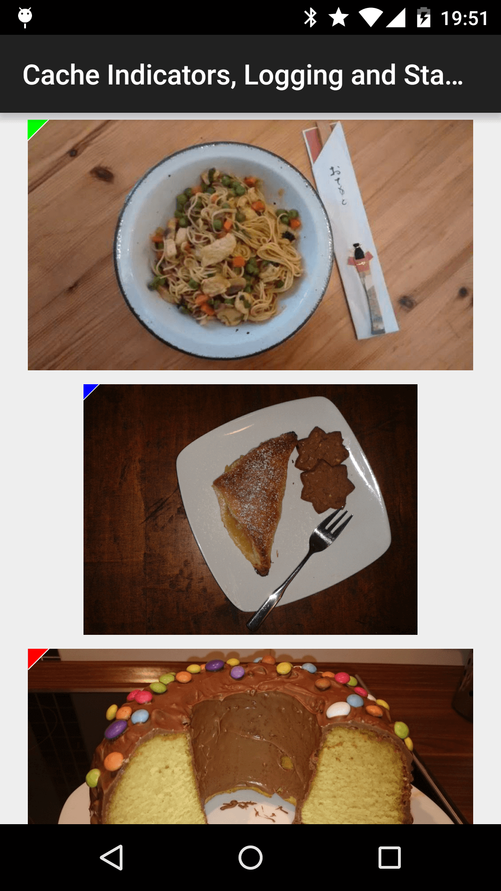

目次
- 画像リクエストの優先順位付け
- tag() によるリクエストのグループ化
- コールバック、RemoteView と Notifications
- 画像の回転と変換
- 画像キャッシュ
- キャッシュインジケータ、ログ、統計
- Picasso.Builder を使用して Picasso をカスタマイズする
- カスタムリクエスト処理
- picasso2-okhttp3-downloader と picasso-transformations
画像リクエストの優先順位付け
優先度：HIGH, MEDIUM, LOW
画像の読み込みに優先度を付けて表示する必要があるシナリオを想定しましょう。その場合に使用します。priority()。このメソッドは3つのパラメータのうちの1つを必要とします：HIGH,MEDIUM,LOW、デフォルトでは、すべてのリクエストは MEDIUM です。
//HIGH
Picasso
.with(context)
.load(UsageExampleListViewAdapter.eatFoodyImages[0])
.fit()
.priority(Picasso.Priority.HIGH)
.into(imageViewHero);
//LOW
Picasso
.with(context)
.load(UsageExampleListViewAdapter.eatFoodyImages[2])
.fit()
.priority(Picasso.Priority.LOW)
.into(imageViewLowPrioRight);
注：使用しますpriority()画像の表示順序を100%保証するものではなく、単にリクエストの優先度です。
tag() によるリクエストのグループ化
画像のリクエスト優先度については理解できたでしょうが、それだけでは不十分かもしれません。複数の画像リクエストを同時にキャンセル、一時停止、再開する必要がある場合を想定しましょう。その場合に使用します。tag()
tag()任意のJavaオブジェクトをパラメータとして使用できます。なぜなら、これらに基づいて画像グループを構築できるからです。画像グループには以下のオプションがあります：
- リクエストの一時停止 pauseTag()
- リクエストの再開 resumeTag()
- リクエストのキャンセル cancelTag()
今でもこれが一体何なのか理解できないかもしれませんが、小さな例を見てみましょう。
例：pauseTag() と resumeTag()
メールアプリがあると仮定しましょう。内容は主にListView表示されます。
さて、ある状況を想像してみましょう。ユーザーが特定の情報を探していて、素早くスワイプするとします。ListView は本来、各 container を迅速にリサイクルして再利用します。しかし、Picasso は各 item に対してリクエストを実行しようとし、ユーザーが素早くスワイプするため、すぐにキャンセルします。
リクエストをさらに減らすために、ListView のスクロールが終了するまで画像の読み込みを待つことができます。その間ユーザーは違いに気付かないでしょうが、これによりリクエスト量がすでに減っています。
実装はとても簡単です。まず、Picasso リクエストにタグを追加します。
Picasso
.with(context)
.load(UsageExampleListViewAdapter.eatFoodyImages[0])
.tag("Profile ListView") // can be any Java object
.into(imageViewWithTag);
//接着，实现一个 `AbsListView.OnScrollListener` 和重写 `onScrollStateChanged()`
@Override
public void onScrollStateChanged(AbsListView view, int scrollState) {
final Picasso picasso = Picasso.with(context);
if (scrollState == SCROLL_STATE_IDLE || scrollState == SCROLL_STATE_TOUCH_SCROLL) {
picasso.resumeTag(context);
} else {
picasso.pauseTag(context);
}
}
//最后一步
listView.setOnScrollListener(onScrollListener);
ListView が非常に速くスクロールしている状態では、すべてのリクエストを一時停止し、通常のスクロールまたは停止時にはリクエストを再開します。
注：この記事では主に String をタグとして使用しています。異なるオブジェクトを使いたいと思うかもしれません。その場合、思いつくのはContext or Activity, Fragment、しかし公式は警告を発していますユーザーが離れてしまった場合Activity、ガベージコレクタは Picasso が Activity オブジェクトを破棄できないため、メモリリークが発生する可能性があります。
コールバック、RemoteView と Notifications
fetch(), get(), Target の違い
fetch()： fetch()バックグラウンドスレッドで画像を非同期に読み込みますが、ImageView表示はされず、Bitmap も返しません。このメソッドはディスクとメモリのキャッシュにのみ保存します。後で現在の画像を読み込むために使用できます。
get()： get()画像を同期読み込みし、Bitmapオブジェクトを返します。Targets：into オプションは ImageView オブジェクトを渡すだけでなく、Target を渡すこともできます。これはコールバックです。
Target をコールバック機構として使用する
これまでのところ、.into()私たちはこれまで ImageView オブジェクトを渡してきましたが、もちろんこのメソッドにはオーバーロードもあります。直接例を見てみましょう。すぐに理解できるかもしれません。
Picasso
.with(context)
.load(UsageExampleListViewAdapter.eatFoodyImages[0])
.into(target);
//下面是重点
private Target target = new Target() {
@Override
public void onBitmapLoaded(Bitmap bitmap, Picasso.LoadedFrom from){
// 图片加载成功
}
@Override
public void onBitmapFailed(Drawable errorDrawable) {
// 图片加载失败
}
@Override
public void onPrepareLoad(Drawable placeHolderDrawable) {
//图片加载中
}
};
注：ここでは匿名クラスの使用は推奨されません。ガベージコレクション機構がターゲットを回収する可能性があり、Bitmap を取得できなくなります。
RemoteView を使用してカスタムNotificationsに画像を読み込む
RemoteView使用用途：Widgets和自定义notification
まず、カスタム notification を見てみましょう。
// create RemoteViews
final RemoteViews remoteViews = new RemoteViews(getPackageName(), R.layout.remoteview_notification);
remoteViews.setImageViewResource(R.id.remoteview_notification_icon, R.mipmap.future_studio_launcher);
remoteViews.setTextViewText(R.id.remoteview_notification_headline, "Headline");
remoteViews.setTextViewText(R.id.remoteview_notification_short_message, "Short Message");
remoteViews.setTextColor(R.id.remoteview_notification_headline, getResources().getColor(android.R.color.black));
remoteViews.setTextColor(R.id.remoteview_notification_short_message, getResources().getColor(android.R.color.black));
// build notification
NotificationCompat.Builder mBuilder = new NotificationCompat.Builder(UsageExampleTargetsAndRemoteViews.this)
.setSmallIcon(R.mipmap.future_studio_launcher)
.setContentTitle("Content Title")
.setContentText("Content Text")
.setContent(remoteViews)
.setPriority(NotificationCompat.PRIORITY_MIN);
final Notification notification = mBuilder.build();
// set big content view for newer androids
if (android.os.Build.VERSION.SDK_INT >= 16) {
notification.bigContentView = remoteViews;
}
NotificationManager mNotificationManager = (NotificationManager) this.getSystemService(Context.NOTIFICATION_SERVICE);
mNotificationManager.notify(NOTIFICATION_ID, notification);
上記のコードはすべてカスタムレイアウトの通知を作成するものですが、詳細には立ち入りません。これが今回の重点ではないからです。Picasso を使用してこの要件を実装してみましょう。非常に簡単です：.into(android.widget.RemoteViews remoteViews, int viewId, int notificationId, android.app.Notification notification)
Picasso
.with(UsageExampleTargetsAndRemoteViews.this)
.load(UsageExampleListViewAdapter.eatFoodyImages[0])
.into(remoteViews, R.id.remoteview_notification_icon, NOTIFICATION_ID, notification);
各変数が何であるかわからない場合は、上記のコードを参考にしてください。まず効果図を見てみましょう。

画像の回転と変換
回転
Picasso には回転機能が組み込まれています。理解するのは難しくないので、コードを直接見てみましょう。
Picasso
.with(context)
.load(UsageExampleListViewAdapter.eatFoodyImages[0])
.rotate(90f)
.into(imageViewSimpleRotate);
デフォルトでは中心点を基準に回転しますが、他の軸点で回転させる必要がある場合もあります。その場合は、呼び出すことができますrotate(float degrees, float pivotX, float pivotY)。
Picasso
.with(context)
.load(R.drawable.floorplan)
.rotate(45f, 200f, 100f)
.into(imageViewComplexRotate);
変換
回転は画像処理技術のほんの一部です。Picasso はさらにTransformation画像処理のための を提供しています。実装するだけでよいのはTransformationインターフェースの主要なメソッドですtransform(android.graphics.Bitmap source)、このメソッドは Bitmap を受け取り、変換後の画像を返します。このインターフェースを実装したら、Picasso で を呼び出すだけです。transform(Transformation transformation)画像の変換が完了します。いろいろ述べましたが、2つの例を見てみましょう。
ぼかし画像
まず、 を実装する必要がありますTransformationインターフェースを、 を使用してRenderScript。ただし、この記事では については紹介しませんRenderScript、しかし、それがぼかし画像に使用できることは理解しておきましょう。
public class BlurTransformation implements Transformation {
RenderScript rs;
public BlurTransformation(Context context) {
super();
rs = Renderscript.create(context);
}
@Override
public Bitmap transform(Bitmap bitmap) {
// 创建一个位图，
Bitmap blurredBitmap = bitmap.copy(Bitmap.Config.ARGB_8888, true);
// 分配内存
Allocation input = Allocation.createFromBitmap(rs, blurredBitmap, Allocation.MipmapControl.MIPMAP_FULL, Allocation.USAGE_SHARED);
Allocation output = Allocation.createTyped(rs, input.getType());
// 加载一个特定的脚本
ScriptIntrinsicBlur script = ScriptIntrinsicBlur.create(rs, Element.U8_4(rs));
script.setInput(input);
// 设置模糊半径
script.setRadius(10);
// 启动ScriptIntrinisicBlur
script.forEach(output);
// 输出
output.copyTo(blurredBitmap);
bitmap.recycle();
return blurredBitmap;
}
@Override
public String key() {
return "blur";
}
}
定義が完了すれば、Picasso での呼び出しは非常に簡単になります。
Picasso
.with(context)
.load(UsageExampleListViewAdapter.eatFoodyImages[0])
.transform(new BlurTransformation(context))
.into(imageViewTransformationBlur);
ぼかしとグレースケール変換それだけでなく、Picasso のtransformメソッドにはさらに が用意されていますtransform(List<? extends Transformation> transformations)、つまり画像に一連の変換を適用できるということです。ここでは、さらにグレースケール変換を実装しましょう。
public class GrayscaleTransformation implements Transformation {
private final Picasso picasso;
public GrayscaleTransformation(Picasso picasso) {
this.picasso = picasso;
}
@Override
public Bitmap transform(Bitmap source) {
Bitmap result = createBitmap(source.getWidth(), source.getHeight(), source.getConfig());
Bitmap noise;
try {
noise = picasso.load(R.drawable.noise).get();
} catch (IOException e) {
throw new RuntimeException("Failed to apply transformation! Missing resource.");
}
BitmapShader shader = new BitmapShader(noise, REPEAT, REPEAT);
ColorMatrix colorMatrix = new ColorMatrix();
colorMatrix.setSaturation(0);
ColorMatrixColorFilter filter = new ColorMatrixColorFilter(colorMatrix);
Paint paint = new Paint(ANTI_ALIAS_FLAG);
paint.setColorFilter(filter);
Canvas canvas = new Canvas(result);
canvas.drawBitmap(source, 0, 0, paint);
paint.setColorFilter(null);
paint.setShader(shader);
paint.setXfermode(new PorterDuffXfermode(PorterDuff.Mode.MULTIPLY));
canvas.drawRect(0, 0, canvas.getWidth(), canvas.getHeight(), paint);
source.recycle();
noise.recycle();
return result;
}
@Override
public String key() {
return "grayscaleTransformation()";
}
}
完了したら、また Picasso で参照します。今回は List コレクションを構築するだけです。
List<Transformation> transformations = new ArrayList<>();
transformations.add(new GrayscaleTransformation(Picasso.with(context)));
transformations.add(new BlurTransformation(context));
Picasso
.with(context)
.load(UsageExampleListViewAdapter.eatFoodyImages[0])
.transform(transformations)
.into(imageViewTransformationsMultiple);
画像キャッシュ
デフォルトの Picasso のキャッシュ設定。
LRUメモリキャッシュ：利用可能なRAMの15% ディスクキャッシュ：ストレージの2%、最大50MB、ただし5MB未満にはできない ディスクおよびネットワークアクセス用の3つのダウンロードスレッド
キャッシュサイズを変更することもできますが、それはこのブログの範囲外です。画像キャッシュのテーマに戻ると、Picasso はまずメモリキャッシュから画像を読み込もうとし、なければディスクキャッシュを検索し、ディスクにもなければネットワークリクエストを開始します（メモリ -> ディスク -> ネットワークリクエスト）。さらに、リクエストされたすべての画像は2つのキャッシュに保存されます（スペースを解放するために削除されなければならないまで）。このキャッシュ戦略で要件を満たせないと考えるなら、次を見てみましょうMemoryPolicy
メモリポリシー
まず、Picasso はリクエストされた画像をメモリから優先的に取得します。この手順をスキップしたい場合は、 を使用できますmemoryPolicy(MemoryPolicy policy, MemoryPolicy... additional)。 MemoryPolicyは2つの値を持つ単純な列挙型ですNO_CACHE和NO_STORE。
Picasso
.with(context)
.load(UsageExampleListViewAdapter.eatFoodyImages[1])
.memoryPolicy(MemoryPolicy.NO_CACHE)
.into(imageViewFromDisk);
NO_STORE がどのような状況で使われるのか知りたいなら、それはリクエストされた画像をメモリにキャッシュしないことです。それでは、次の例を見てみましょう。
Picasso
.with(context)
.load(UsageExampleListViewAdapter.eatFoodyImages[1])
.memoryPolicy(MemoryPolicy.NO_CACHE, MemoryPolicy.NO_STORE)
.into(imageViewFromDisk);
これにより、リクエストされた画像はメモリにキャッシュされず、Picasso もメモリ内を探しに行きません。この利点は、既存のAPIではメモリキャッシュをクリアできないため、メモリ回収を高速化できることです。
ネットワークポリシー
ディスクキャッシュをスキップしたい場合は、 を呼び出します.networkPolicy(NetworkPolicy policy, NetworkPolicy... additional) 与 NetworkPolicy.NO_CACHEをパラメータとして渡します。
Picasso
.with(context)
.load(UsageExampleListViewAdapter.eatFoodyImages[2])
.networkPolicy(NetworkPolicy.NO_CACHE)
.into(imageViewFromNetwork);
最後に、3番目のオプションも提供されていますNetworkPolicy：OFFLINE。これをパラメータとして使用すると、Picasso はキャッシュからのみ画像を探し、ネットワークがあってもリクエストを送信しません。
キャッシュインジケータ、ログ、統計
キャッシュインジケータ
有能な開発者として、画像がどこから来たのかを分析する必要がある場合があります。最も簡単な方法は、キャッシュインジケータを有効にすることです。次のように使うだけです。.setIndicatorsEnabled(true) 。
Picasso
.with(context)
.setIndicatorsEnabled(true);
以降、すべての画像の左上隅に小さなインジケータが表示されます。

- 緑（画像はメモリから）
- 青（画像はディスクから）
- 赤（画像はネットワークから）
ログ
場合によっては、より多くの情報が必要になることもあります。その場合は、ログを有効にできます。.setLoggingEnabled(true)。
Picasso
.with(context)
.setLoggingEnabled(true);
これにより、すべての画像読み込みでログが出力されます。
D/Picasso﹕ Main created [R0] Request{http://i.imgur.com/rT5vXE1.jpg}
D/Picasso﹕ Dispatcher enqueued [R0]+21ms
D/Picasso﹕ Hunter executing [R0]+26ms
D/Picasso﹕ Hunter decoded [R0]+575ms
D/Picasso﹕ Dispatcher batched [R0]+576ms for completion
D/Picasso﹕ Main completed [R0]+807ms from NETWORK
D/Picasso﹕ Dispatcher delivered [R0]+809ms
統計
リクエストの平均結果を取得できます。
StatsSnapshot picassoStats = Picasso.with(context).getSnapshot();
Log.d("Picasso Stats", picassoStats.toString());
コンソールに出力されます。
D/Picasso Stats﹕ StatsSnapshot{
maxSize=28760941,
size=26567204,
cacheHits=30,
cacheMisses=58,
downloadCount=0,
totalDownloadSize=0,
averageDownloadSize=0,
totalOriginalBitmapSize=118399432,
totalTransformedBitmapSize=96928004,
averageOriginalBitmapSize=2466654,
averageTransformedBitmapSize=2019333,
originalBitmapCount=48,
transformedBitmapCount=41,
timeStamp=1432576918067}
Picasso.Builder を使用して Picasso をカスタマイズする
Picassoには、Picassoインスタンスをカスタマイズする直接的なメソッドがあります。Picasso.Builder类これを使用してPicassoをカスタマイズできます。
局所的に Picasso をカスタマイズする
カスタムPicassoの説明に入る前に、標準のPicassoインスタンスを取得する方法を簡単に振り返っておきましょう。
Picasso picasso = Picasso.with(Context);
このメソッドは標準のPicassoを返します。カスタムインスタンスを構築する必要がある場合、一つの方法はPicasso.Builderオブジェクトを生成して調整することです。
// 创建 Picasso.Builder 对象 Picasso.Builder picassoBuilder = new Picasso.Builder(context); // TODO Picasso picasso = picassoBuilder.build()
次に、カスタムのPicassoを使用して画像を読み込むことができます。
picasso
.load(UsageExampleListViewAdapter.eatFoodyImages[0])
.into(imageView1)
グローバルにカスタムPicassoを使用する
Picassoインスタンスの作成と変更の方法は変わりません。
// 创建 Picasso.Builder 对象 Picasso.Builder picassoBuilder = new Picasso.Builder(context); //TODO Picasso picasso = picassoBuilder.build();
このPicassoをグローバルにするには、ただ呼び出すだけです。Picasso.setSingletonInstance(picasso);通常、この初期化はアプリの起動時に行う必要があります。
try {
Picasso.setSingletonInstance(picasso);
} catch (IllegalStateException ignored) {
}
一度カスタムのグローバルPicassoを設定すると、以降のすべてのPicasso.with(Context context)呼び出しは、カスタムPicassoを返すようになります。
Picassoのカスタマイズ方法を学びましたが、カスタムPicassoで何ができるのかはまだ分かっていません。
カスタムPicasso：ダウンローダーの変更
Picassoはデフォルトで、利用可能な最良のキャッシュとネットワークコンポーネントを使用します。デフォルトのダウンローダーを変更したい場合は、Picasso.Builder呼び出すことができます。downloader(Downloader downloader)たとえば、私たちのOkhttpです。
Picasso.Builder picassoBuilder = new Picasso.Builder(context); //更改下载器。 picassoBuilder.downloader(new OkHttpDownloader(new OkHttpClient())); Picasso picasso = picassoBuilder.build();
ただし、注意すべき点が1つあります。読み込む画像が自分のサーバーから取得されたもので、サーバーがHTTPSを使用しており、さらに署名が必要な場合、このときOKHttpはSSLの問題により画像を読み込めなくなります。その場合はUnsafeOkHttpClientを使用することで、この問題を回避できます。
picassoBuilder.downloader(
new OkHttpDownloader(
UnsafeOkHttpClient.getUnsafeOkHttpClient()
)
);
カスタムリクエスト処理
引き続きカスタムPicassoです。まず、コードの一部を見てみましょう。
Picasso.Builder picassoBuilder = new Picasso.Builder(context); picassoBuilder.addRequestHandler(new EatFoodyRequestHandler()); Picasso picasso = picassoBuilder.build();
唯一疑問に思うのは、おそらく次の部分です。EatFoodyRequestHandlerこれは私たちが継承するRequestHandlerカスタム（リクエスト処理）クラスです。では、次が何かを見てみましょう。RequestHandler。
RequestHandler の実装
これは抽象クラスであり、実装すべきメソッドが2つあります。
boolean canHandleRequest(Request data) Result load(Request request, int networkPolicy)
最初のメソッドは、Picassoにこのリクエストハンドラーが現在のリクエストを処理するかどうかを認識させます。処理できる場合、リクエストはload()メソッドに渡されます。
このクラス全体がどのように実装されているかを見てみましょう。
public class EatFoodyRequestHandler extends RequestHandler {
private static final String EAT_FOODY_RECIPE_SCHEME = "eatfoody";
@Override
public boolean canHandleRequest(Request data) {
return EAT_FOODY_RECIPE_SCHEME.equals(data.uri.getScheme());
}
@Override
public Result load(Request request, int networkPolicy) throws IOException {
//获取请求的host
String imageKey = request.uri.getHost();
Bitmap bitmap;
if (imageKey.contentEquals("cupcake")) {
bitmap = BitmapFactory.decodeResource(getResources(), R.drawable.cupcake);
}else if (imageKey.contentEquals("full_cake")) {
bitmap = BitmapFactory.decodeResource(getResources(), R.drawable.full_cake);
}else {
bitmap = BitmapFactory.decodeResource(getResources(), R.mipmap.ic_launcher);
}
return new Result(bitmap, Picasso.LoadedFrom.DISK);
}
}
このコードは一見すると難しくはありません。まずcanHandleRequestメソッド内で、uriのプロトコルが次に示す値と等しいかどうかを判定します。eatfoodyそうでない場合、Picassoは標準のダウンロードフローに戻ります。等しい場合は、そのメソッドに入ります。loadそのメソッド内で、loaduriのhost部分を判定し、その後、対応するbitmapを返します。
//这会按照标准的流程加载图片
picasso
.load("http://i.imgur.com/DvpvklR.png")
.into(imageView1);
//他会进入 load 方法中的逻辑判断去加载 `R.drawable.full_cake`
picasso
.load("eatfoody://cupcake")
.into(imageView2)
picasso2-okhttp3-downloader と picasso-transformations
前の内容を注意深く読んだのであれば、ダウンローダーと変換についてすでに理解できていると思います。その拡張性は否定できません。当然、多くの優秀な開発者が私たちのために適切なフレームワークを提供してくれるでしょう。
ただし、関連する依存関係を追加する必要があります。これは難しくありません。自分でGitHubを調べてもよいですし、サンプルも提供されています。
まとめ
Picassoの使用チュートリアルは、ひとまずここまでにします。機会があれば、またそのソースコードを一緒に読んでいきたいと思います。しかし、著者としても現時点ではまだ十分に成熟していないと認めているので、それは後回しにして読むことにします。なぜなら、その設計思想と拡張性は非常に優れており、著者が現在も使っているGlideでさえ、類似した設計パターンに基づいているからです。ただ、戦略の面では少し異なります。同時に、Glideも学ぶつもりです。両者は似ていますが、必要としている人のために解説する価値があります..... もちろん、著者によるこの2つの比較分析も欠かせません。それはもしかすると、より興味深いものになるでしょう。